Frequency Tables and Frequency ChartsBảng tần số và biểu đồ tần số
Grade 9 · Topic: Frequency and Relative FrequencyLớp 9 · Chủ đề: Tần số và tần số tương đối
1Lesson IntroductionGiới thiệu bài học
Learning goalsMục tiêu bài học
By the end of this lesson you can:
Sau bài học này, em có thể:
recognize the frequency of a value and a frequency table;
nhận biết được tần số của một giá trị và bảng tần số;
make a frequency table from a data set;
lập được bảng tần số từ một mẫu dữ liệu;
draw and read frequency bar charts and line graphs;
vẽ và đọc được biểu đồ tần số dạng cột, dạng đoạn thẳng;
draw conclusions from real data (air quality, sizes, scores).
nhận xét, rút ra kết luận từ dữ liệu thực tế (chất lượng không khí, cỡ giày, điểm số).
2Mathematical VocabularyTừ vựng Toán học
data set – the collected values, e.g. the scores of 20 students.
Mẫu dữ liệu – các giá trị thu thập được, ví dụ điểm của 20 học sinh.
frequency – the number of times a value appears; symbol \(m\).
Tần số – số lần xuất hiện của một giá trị; kí hiệu \(m\).
sample size – the number of values in the data set; \(n=m_1+\dots+m_k\).
Cỡ mẫu – số giá trị của mẫu dữ liệu; \(n=m_1+\dots+m_k\).
frequency table – a table listing each value with its frequency.
Bảng tần số – bảng ghi mỗi giá trị kèm tần số của nó.
frequency chart: bar chart / line graph – a picture of a frequency table.
Biểu đồ tần số: biểu đồ cột / biểu đồ đoạn thẳng – hình ảnh của bảng tần số.
horizontal axis / vertical axis – values / frequencies.
Trục ngang / trục đứng – các giá trị / các tần số.
3Useful English PhrasesCụm từ tiếng Anh thường gặp
The value 8 appears 7 times, so its frequency is 7.
Giá trị 8 xuất hiện 7 lần nên tần số của nó là 7.
The sample size is \(n=20\).
Cỡ mẫu là \(n=20\).
The tallest bar shows the most common value.
Cột cao nhất cho biết giá trị xuất hiện nhiều nhất.
From the chart, we can see that…
Từ biểu đồ, ta thấy rằng…
A survey of 30 days shows that…
Kết quả khảo sát trong 30 ngày cho thấy…
4Prerequisite ReviewÔn tập kiến thức nền
Grade 6–7. A bar chart shows data by bars; a line graph joins points by line segments.
Lớp 6–7. Biểu đồ cột biểu diễn dữ liệu bằng các cột; biểu đồ đoạn thẳng nối các điểm bằng đoạn thẳng.
Grade 8. Collect, sort and present data in tables and charts.
Lớp 8. Thu thập, phân loại và biểu diễn dữ liệu bằng bảng, biểu đồ.
5TheoryLý thuyết
5.1 Frequency and frequency tableTần số và bảng tần số
DefinitionĐịnh nghĩa
Suppose a data set has \(k\) different values \(x_1, x_2, \dots, x_k\). The frequency \(m_i\) of the value \(x_i\) is the number of times \(x_i\) appears in the data set. The sum \(n=m_1+m_2+\dots+m_k\) is the sample size.
Giả sử mẫu dữ liệu có \(k\) giá trị khác nhau \(x_1, x_2, \dots, x_k\). Tần số \(m_i\) của giá trị \(x_i\) là số lần \(x_i\) xuất hiện trong mẫu dữ liệu. Tổng \(n=m_1+m_2+\dots+m_k\) là cỡ mẫu.
A frequency table lists the values in the first row and their frequencies in the second row:
Bảng tần số ghi các giá trị ở dòng thứ nhất và tần số tương ứng ở dòng thứ hai:
| Value (x)Giá trị (x) | \(x_1\) | \(x_2\) | \(\dots\) | \(x_k\) |
|---|---|---|---|---|
| Frequency (m)Tần số (m) | \(m_1\) | \(m_2\) | \(\dots\) | \(m_k\) |
For example, the test scores of 20 students are: 7, 8, 8, 8, 10, 6, 9, 10, 7, 8, 9, 8, 9, 6, 8, 7, 8, 6, 7, 7. The frequency table is:
Ví dụ, điểm bài kiểm tra của 20 học sinh là: 7, 8, 8, 8, 10, 6, 9, 10, 7, 8, 9, 8, 9, 6, 8, 7, 8, 6, 7, 7. Bảng tần số là:
| Score (x)Điểm (x) | 6 | 7 | 8 | 9 | 10 |
|---|---|---|---|---|---|
| Frequency (m)Tần số (m) | 3 | 5 | 7 | 3 | 2 |
The score 8 has the greatest frequency (7); the sample size is \(n=3+5+7+3+2=20\).
Điểm 8 có tần số lớn nhất (7); cỡ mẫu là \(n=3+5+7+3+2=20\).
5.2 Frequency chartsBiểu đồ tần số
How to drawCách vẽ
Bar chart: write the values on the horizontal axis and the frequencies on the vertical axis; draw a bar above each value with height equal to its frequency.
Dạng cột: ghi các giá trị trên trục ngang, tần số trên trục đứng; vẽ mỗi cột có chiều cao bằng tần số của giá trị tương ứng.
Line graph: mark the points \((x_i;\ m_i)\) and join each point to the next one by a line segment.
Dạng đoạn thẳng: đánh dấu các điểm \((x_i;\ m_i)\) rồi nối mỗi điểm với điểm kế tiếp bằng đoạn thẳng.
Always give the chart a title and name both axes.
Biểu đồ cần có tên và ghi rõ tên hai trục.
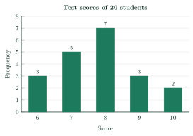
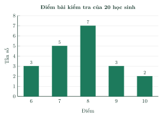
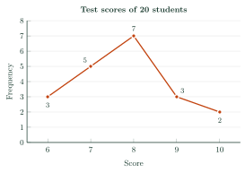
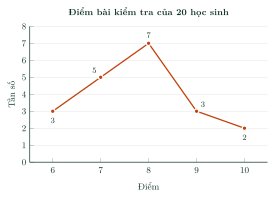
NoteChú ý
The bar chart and the line graph show the same table: the taller the bar (the higher the point), the greater the frequency.
Biểu đồ cột và biểu đồ đoạn thẳng cùng biểu diễn một bảng tần số: cột càng cao (điểm càng cao) thì tần số càng lớn.
6Worked ExamplesVí dụ có lời giải
ExampleVí dụ 1RememberingNhận biết – Number of siblingsSố anh chị em ruột
The numbers of siblings of 20 students are: 1, 1, 1, 1, 1, 2, 0, 0, 3, 2, 1, 0, 1, 3, 2, 1, 2, 0, 1, 1.
a) List the different values.
b) Find the frequencies of the values 1 and 3.
c) Find the sample size.
Số anh chị em ruột của 20 học sinh là: 1, 1, 1, 1, 1, 2, 0, 0, 3, 2, 1, 0, 1, 3, 2, 1, 2, 0, 1, 1.
a) Nêu các giá trị khác nhau.
b) Tìm tần số của các giá trị 1 và 3.
c) Tìm cỡ mẫu.
Analysis: Count how many times each value appears.
Phân tích: Đếm số lần xuất hiện của mỗi giá trị.
a) The different values are 0, 1, 2, 3.
a) Các giá trị khác nhau là 0, 1, 2, 3.
b) The value 1 appears 10 times and the value 3 appears 2 times: \(m=10\) and \(m=2\).
b) Giá trị 1 xuất hiện 10 lần, giá trị 3 xuất hiện 2 lần: \(m=10\) và \(m=2\).
c) \(n=4+10+4+2=20\).
c) \(n=4+10+4+2=20\).
0, 1, 2, 3; frequencies 10 and 2; \(n=20\).
0, 1, 2, 3; tần số 10 và 2; \(n=20\).
ExampleVí dụ 2UnderstandingThông hiểu – Shoe sizesCỡ giày
A shoe shop records the sizes of 24 pairs of shoes sold in one day: 37, 39, 38, 38, 38, 41, 40, 38, 39, 40, 40, 39, 39, 40, 39, 39, 41, 39, 37, 37, 40, 39, 38, 38. Make the frequency table.
Một cửa hàng ghi lại cỡ của 24 đôi giày bán được trong một ngày: 37, 39, 38, 38, 38, 41, 40, 38, 39, 40, 40, 39, 39, 40, 39, 39, 41, 39, 37, 37, 40, 39, 38, 38. Lập bảng tần số.
Analysis: Tick each value as you count, then check that the frequencies add up to 24.
Phân tích: Đánh dấu từng giá trị khi đếm, rồi kiểm tra tổng các tần số bằng 24.
The values are 37, 38, 39, 40, 41. Counting gives the table:
Các giá trị là 37, 38, 39, 40, 41. Đếm được bảng:
Shoe size (x)Cỡ giày (x) 37 38 39 40 41 Frequency (m)Tần số (m) 3 6 8 5 2 Check: \(3+6+8+5+2=24\).
Kiểm tra: \(3+6+8+5+2=24\).
See the table above.
Xem bảng trên.
ExampleVí dụ 3Basic applicationVận dụng thấp – Drawing a bar chartVẽ biểu đồ cột
Draw the frequency bar chart for the table in Example 2. Which size should the shop order the most?
Vẽ biểu đồ tần số dạng cột cho bảng ở Ví dụ 2. Cửa hàng nên nhập nhiều nhất cỡ giày nào?
Analysis: Values on the horizontal axis, frequencies on the vertical axis.
Phân tích: Giá trị trên trục ngang, tần số trên trục đứng.
Draw five bars above 37, 38, 39, 40, 41 with heights 3, 6, 8, 5, 2:
Vẽ năm cột trên các giá trị 37, 38, 39, 40, 41 với chiều cao 3, 6, 8, 5, 2:
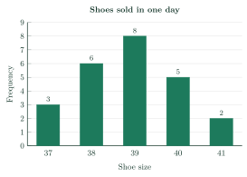
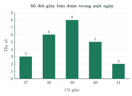
The tallest bar is at size 39 (8 pairs), so size 39 sells best.
Cột cao nhất ứng với cỡ 39 (8 đôi), nên cỡ 39 bán chạy nhất.
Size 39.
Cỡ 39.
ExampleVí dụ 4Basic applicationVận dụng thấp – Reading a line graphĐọc biểu đồ đoạn thẳng
The line graph shows the number of goals in each of the 30 matches of a school football tournament.
a) Make the frequency table.
b) In how many matches were at least 3 goals scored?
Biểu đồ đoạn thẳng cho biết số bàn thắng trong mỗi trận của 30 trận đấu ở giải bóng đá của trường.
a) Lập bảng tần số.
b) Có bao nhiêu trận có từ 3 bàn thắng trở lên?
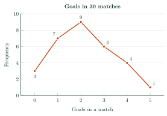
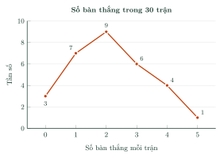
Analysis: Read the height of each point.
Phân tích: Đọc độ cao của mỗi điểm.
a) Reading the points:
a) Đọc các điểm:
Goals (x)Số bàn thắng (x) 0 1 2 3 4 5 Frequency (m)Tần số (m) 3 7 9 6 4 1 b) \(6+4+1=11\) matches.
b) \(6+4+1=11\) trận.
b) 11 matches.
b) 11 trận.
ExampleVí dụ 5ApplicationVận dụng – Air qualityChất lượng không khí
A city measured its air quality index (AQI) on 30 days and rated each day as Good, Moderate, Poor or Bad. The results are shown in the bar chart.
a) Make the frequency table.
b) What can you conclude? Give one piece of advice.
Một thành phố đo chỉ số chất lượng không khí (AQI) trong 30 ngày và xếp mỗi ngày vào một trong các mức Tốt, Trung bình, Kém, Xấu. Kết quả cho ở biểu đồ cột.
a) Lập bảng tần số.
b) Em rút ra nhận xét gì? Hãy nêu một lời khuyên.
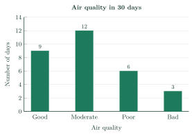
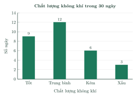
Analysis: Compare the “good or moderate” days with the “poor or bad” days.
Phân tích: So sánh số ngày “tốt hoặc trung bình” với số ngày “kém hoặc xấu”.
a) The frequency table:
a) Bảng tần số:
Air qualityChất lượng không khí GoodTốt ModerateTrung bình PoorKém BadXấu Number of daysSố ngày 9 12 6 3 b) The most common rating is Moderate (12 days). Good or moderate: \(9+12=21\) days; poor or bad: \(6+3=9\) days.
b) Mức xuất hiện nhiều nhất là Trung bình (12 ngày). Tốt hoặc trung bình: \(9+12=21\) ngày; kém hoặc xấu: \(6+3=9\) ngày.
So the air quality is acceptable on most days, but on 9 days of 30 it is unhealthy. Advice: check the AQI every day and wear a mask outdoors on poor or bad days.
Vậy phần lớn các ngày không khí ở mức chấp nhận được, nhưng có 9 trong 30 ngày không khí có hại cho sức khỏe. Lời khuyên: theo dõi AQI hằng ngày và đeo khẩu trang khi ra ngoài vào những ngày kém, xấu.
21 good or moderate days, 9 poor or bad days.
21 ngày tốt hoặc trung bình, 9 ngày kém hoặc xấu.
7PracticeBài tập luyện tập
A. Multiple ChoiceA. Trắc nghiệm nhiều lựa chọn
The data below are the number of books read last month by 17 students: 3, 0, 2, 1, 4, 4, 2, 3, 4, 0, 0, 1, 3, 1, 0, 5, 0. What is the frequency of the value 3?
Dãy dữ liệu sau là số quyển sách đã đọc trong tháng trước của 17 học sinh: 3, 0, 2, 1, 4, 4, 2, 3, 4, 0, 0, 1, 3, 1, 0, 5, 0. Tần số của giá trị 3 là bao nhiêu?
Answer: b. Count the times 3 appears: \(m=3\).
Đáp án b. Đếm số lần giá trị 3 xuất hiện: \(m=3\).
| Score (x) | 5 | 6 | 7 | 8 |
|---|---|---|---|---|
| Frequency (m) | 4 | 5 | 3 | 6 |
| Điểm (x) | 5 | 6 | 7 | 8 |
|---|---|---|---|---|
| Tần số (m) | 4 | 5 | 3 | 6 |
Answer: c. \(n=4+5+3+6=18\).
Đáp án c. \(n=4+5+3+6=18\).
The bar chart shows the frequencies of the number of books read last month by 22 students. Which value has the greatest frequency?
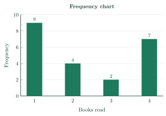
Biểu đồ cột cho biết tần số của số quyển sách đã đọc trong tháng trước của 22 học sinh. Giá trị nào có tần số lớn nhất?
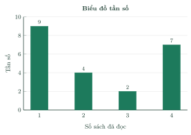
Answer: d. The tallest bar is at 1.
Đáp án d. Cột cao nhất ứng với 1.
B. True or FalseB. Đúng hoặc sai
The data are the number of books read last month by 14 students: 3, 2, 1, 3, 3, 2, 3, 3, 3, 4, 1, 1, 3, 2. In the frequency table of these data, the value 4 has frequency 3.
Dữ liệu là số quyển sách đã đọc trong tháng trước của 14 học sinh: 3, 2, 1, 3, 3, 2, 3, 3, 3, 4, 1, 1, 3, 2. Trong bảng tần số của mẫu dữ liệu này, giá trị 4 có tần số 3.
False. The value 4 appears once.
Sai. Giá trị 4 xuất hiện 1 lần.
The line graph shows the frequencies of the number of children in families. The value 2 appears more often than the value 1.
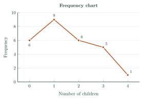
Biểu đồ đoạn thẳng cho biết tần số của số con của gia đình. Giá trị 2 xuất hiện nhiều lần hơn giá trị 1.
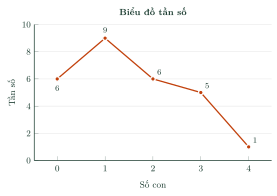
False. Frequencies: 2 has 6, 1 has 9.
Sai. Tần số: 2 là 6, 1 là 9.
C. Short AnswerC. Trả lời ngắn
| Hours of sleep (x) | 6 | 7 | 8 | 9 | 10 |
|---|---|---|---|---|---|
| Frequency (m) | 4 | 7 | ? | 8 | 1 |
| Số giờ ngủ (x) | 6 | 7 | 8 | 9 | 10 |
|---|---|---|---|---|---|
| Tần số (m) | 4 | 7 | ? | 8 | 1 |
Enter a number.
Nhập một số.
Answer: 5. \(25-(4+7+8+1)=5\).
Đáp số: 5. \(25-(4+7+8+1)=5\).
The bar chart shows the number of children in 34 families. For how many families is the number of children at least 1?
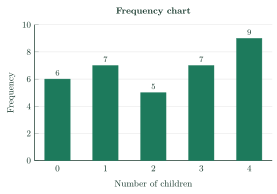
Biểu đồ cột cho biết số con của 34 gia đình. Có bao nhiêu gia đình có số con lớn hơn hoặc bằng 1?
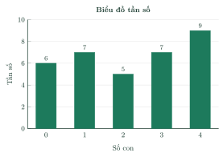
Enter a number.
Nhập một số.
Answer: 28. \(7+5+7+9=28\).
Đáp số: 28. \(7+5+7+9=28\).
D1. Self-practice – RememberingD1. Tự luyện – Mức Nhận biết
In a data set, the frequency of a value is…
Trong một mẫu dữ liệu, tần số của một giá trị là…
Answer: c. Frequency = number of times the value appears.
Đáp án c. Tần số là số lần xuất hiện của giá trị đó.
In a frequency chart, the vertical axis shows…
Trong biểu đồ tần số, trục đứng biểu diễn…
Answer: d. Vertical axis: frequencies.
Đáp án d. Trục đứng biểu diễn tần số.
| Score (x) | 5 | 6 | 7 | 8 | 9 | 10 |
|---|---|---|---|---|---|---|
| Frequency (m) | 2 | 3 | 5 | 5 | 8 | 6 |
| Điểm (x) | 5 | 6 | 7 | 8 | 9 | 10 |
|---|---|---|---|---|---|---|
| Tần số (m) | 2 | 3 | 5 | 5 | 8 | 6 |
Answer: a. Read the column with \(m=6\): the value is 10.
Đáp án a. Đọc cột có \(m=6\): giá trị là 10.
D2. Self-practice – UnderstandingD2. Tự luyện – Mức Thông hiểu
The data are the number of books read last month by 17 students: 3, 2, 2, 3, 2, 2, 3, 3, 2, 3, 4, 3, 2, 2, 5, 2, 5. The frequencies of the values 2, 3, 4, 5 are respectively…
Dữ liệu là số quyển sách đã đọc trong tháng trước của 17 học sinh: 3, 2, 2, 3, 2, 2, 3, 3, 2, 3, 4, 3, 2, 2, 5, 2, 5. Tần số của các giá trị 2, 3, 4, 5 lần lượt là…
Answer: c. Count each value: \(8;\ 6;\ 1;\ 2\).
Đáp án c. Đếm từng giá trị: \(8;\ 6;\ 1;\ 2\).
The data are the hours of sleep of 19 students last night: 10, 6, 8, 8, 6, 8, 6, 6, 7, 6, 6, 6, 9, 7, 7, 9, 8, 8, 8. For how many students is the number of hours of sleep less than 8?
Dữ liệu là số giờ ngủ đêm qua của 19 học sinh: 10, 6, 8, 8, 6, 8, 6, 6, 7, 6, 6, 6, 9, 7, 7, 9, 8, 8, 8. Có bao nhiêu học sinh có số giờ ngủ nhỏ hơn 8?
Answer: a. \(7+3=10\).
Đáp án a. \(7+3=10\).
The answers of a survey about how 14 students travel to school are: bicycle, motorbike, bicycle, on foot, bicycle, bicycle, bus, bicycle, motorbike, bus, bus, bicycle, bicycle, bicycle. What is the frequency of “bus”?
Kết quả khảo sát về phương tiện đến trường của 14 học sinh là: xe đạp, xe đạp, xe đạp, xe đạp, xe đạp, xe máy, xe buýt, xe đạp, xe đạp, xe đạp, xe buýt, đi bộ, xe buýt, xe máy. Tần số của “xe buýt” là bao nhiêu?
Answer: b. “bus” appears 3 times.
Đáp án b. “xe buýt” xuất hiện 3 lần.
D3. Self-practice – Basic applicationD3. Tự luyện – Mức Vận dụng thấp
The line graph shows the number of goals scored in 27 football matches. For how many matches is the number of goals greater than 1?
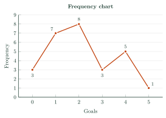
Biểu đồ đoạn thẳng cho biết số bàn thắng trong 27 trận bóng đá. Có bao nhiêu trận có số bàn thắng lớn hơn 1?
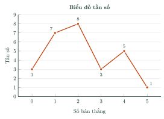
Answer: c. \(8+3+5+1=17\).
Đáp án c. \(8+3+5+1=17\).
The bar chart shows the favorite fruits of 33 students. How many more students chose the most popular answer than the least popular answer?
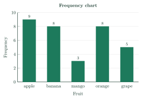
Biểu đồ cột cho biết loại quả yêu thích của 33 học sinh. Số học sinh chọn câu trả lời được chọn nhiều nhất nhiều hơn số học sinh chọn câu trả lời được chọn ít nhất là bao nhiêu?
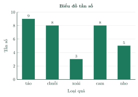
Answer: d. \(9-3=6\).
Đáp án d. \(9-3=6\).
The bar chart shows the results of a survey about the favorite fruits of students in class 9G. How many students took part in the survey?
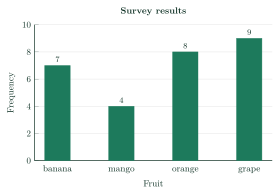
Biểu đồ cột cho biết kết quả khảo sát về loại quả yêu thích của học sinh lớp 9G. Có bao nhiêu học sinh tham gia khảo sát?
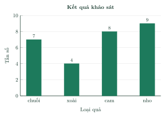
Answer: d. \(n=7+4+8+9=28\).
Đáp án d. \(n=7+4+8+9=28\).
D4. Self-practice – Advanced applicationD4. Tự luyện – Mức Vận dụng
The bar chart shows the air quality index (AQI) of a city over 30 days of September. How many more days had good air quality than poor or bad air quality?
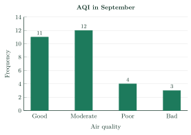
Biểu đồ cột cho biết chất lượng không khí (theo chỉ số AQI) của một thành phố trong 30 ngày của tháng Chín. Số ngày không khí tốt nhiều hơn số ngày không khí kém hoặc xấu là bao nhiêu?
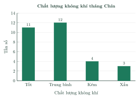
Answer: c. \(11-(4+3)=4\).
Đáp án c. \(11-(4+3)=4\).
| Hours of sleep (x) | 6 | 7 | 8 | 9 | 10 |
|---|---|---|---|---|---|
| Frequency (m) | 5 | 5 | 4 | ? | ? |
| Số giờ ngủ (x) | 6 | 7 | 8 | 9 | 10 |
|---|---|---|---|---|---|
| Tần số (m) | 5 | 5 | 4 | ? | ? |
Answer: d. \(3m+m=26-14=12\Rightarrow m=3\).
Đáp án d. \(3m+m=26-14=12\Rightarrow m=3\).
| Score (x) | 5 | 6 | 7 | 8 | 9 | 10 |
|---|---|---|---|---|---|---|
| 9B: Frequency (m) | 4 | 9 | 2 | 8 | 2 | 8 |
| 9D: Frequency (m) | 4 | 6 | 9 | 2 | 9 | 9 |
| Điểm (x) | 5 | 6 | 7 | 8 | 9 | 10 |
|---|---|---|---|---|---|---|
| 9B: Tần số (m) | 4 | 9 | 2 | 8 | 2 | 8 |
| 9D: Tần số (m) | 4 | 6 | 9 | 2 | 9 | 9 |
Answer: a. 9B: \(8+2+8=18\); 9D: \(2+9+9=20\).
Đáp án a. 9B: \(8+2+8=18\); 9D: \(2+9+9=20\).
A. Multiple ChoiceA. Trắc nghiệm nhiều lựa chọn
The data below are the shoe sizes of 17 students: 37, 37, 37, 37, 40, 40, 40, 38, 40, 37, 37, 40, 38, 39, 37, 38, 38. What is the frequency of the value 38?
Dãy dữ liệu sau là cỡ giày của 17 học sinh: 37, 37, 37, 37, 40, 40, 40, 38, 40, 37, 37, 40, 38, 39, 37, 38, 38. Tần số của giá trị 38 là bao nhiêu?
Answer: d. Count the times 38 appears: \(m=4\).
Đáp án d. Đếm số lần giá trị 38 xuất hiện: \(m=4\).
| Goals (x) | 0 | 1 | 2 | 3 | 4 | 5 |
|---|---|---|---|---|---|---|
| Frequency (m) | 1 | 7 | 5 | 8 | 2 | 2 |
| Số bàn thắng (x) | 0 | 1 | 2 | 3 | 4 | 5 |
|---|---|---|---|---|---|---|
| Tần số (m) | 1 | 7 | 5 | 8 | 2 | 2 |
Answer: a. \(n=1+7+5+8+2+2=25\).
Đáp án a. \(n=1+7+5+8+2+2=25\).
The bar chart shows the frequencies of the hours of sleep of 27 students last night. What is the frequency of the value “6”?
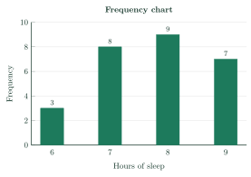
Biểu đồ cột cho biết tần số của số giờ ngủ đêm qua của 27 học sinh. Tần số của giá trị “6” là bao nhiêu?
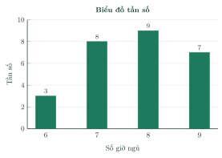
Answer: b. The bar of “6” has height 3.
Đáp án b. Cột ứng với “6” cao 3.
B. True or FalseB. Đúng hoặc sai
The data are the shoe sizes of 18 students: 40, 37, 38, 40, 40, 40, 38, 37, 38, 39, 36, 37, 36, 40, 38, 40, 38, 37. In the frequency table of these data, the value 37 has frequency 4.
Dữ liệu là cỡ giày của 18 học sinh: 40, 37, 38, 40, 40, 40, 38, 37, 38, 39, 36, 37, 36, 40, 38, 40, 38, 37. Trong bảng tần số của mẫu dữ liệu này, giá trị 37 có tần số 4.
True. The value 37 appears 4 times.
Đúng. Giá trị 37 xuất hiện 4 lần.
The line graph shows the frequencies of the number of books read last month by students. The value 2 appears more often than the value 4.
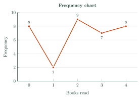
Biểu đồ đoạn thẳng cho biết tần số của số quyển sách đã đọc trong tháng trước của học sinh. Giá trị 2 xuất hiện nhiều lần hơn giá trị 4.
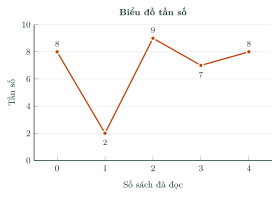
True. Frequencies: 2 has 9, 4 has 8.
Đúng. Tần số: 2 là 9, 4 là 8.
C. Short AnswerC. Trả lời ngắn
| Number of children (x) | 0 | 1 | 2 | 3 | 4 |
|---|---|---|---|---|---|
| Frequency (m) | ? | 2 | 6 | 5 | 5 |
| Số con (x) | 0 | 1 | 2 | 3 | 4 |
|---|---|---|---|---|---|
| Tần số (m) | ? | 2 | 6 | 5 | 5 |
Enter a number.
Nhập một số.
Answer: 9. \(27-(2+6+5+5)=9\).
Đáp số: 9. \(27-(2+6+5+5)=9\).
The bar chart shows the number of books read last month by 27 students. For how many students is the number of books read at least 1?
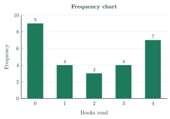
Biểu đồ cột cho biết số quyển sách đã đọc trong tháng trước của 27 học sinh. Có bao nhiêu học sinh có số sách đã đọc lớn hơn hoặc bằng 1?
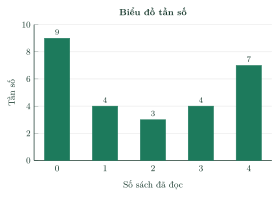
Enter a number.
Nhập một số.
Answer: 18. \(4+3+4+7=18\).
Đáp số: 18. \(4+3+4+7=18\).
D1. Self-practice – RememberingD1. Tự luyện – Mức Nhận biết
In a frequency bar chart, the horizontal axis shows…
Trong biểu đồ tần số dạng cột, trục ngang biểu diễn…
Answer: d. Horizontal axis: values; vertical axis: frequencies.
Đáp án d. Trục ngang: các giá trị; trục đứng: tần số.
In a frequency bar chart, the tallest bar belongs to…
Trong biểu đồ tần số dạng cột, cột cao nhất ứng với…
Answer: c. Taller bar = greater frequency.
Đáp án c. Cột càng cao thì tần số càng lớn.
| Shoe size (x) | 36 | 37 | 38 | 39 | 40 | 41 |
|---|---|---|---|---|---|---|
| Frequency (m) | 6 | 1 | 5 | 6 | 5 | 7 |
| Cỡ giày (x) | 36 | 37 | 38 | 39 | 40 | 41 |
|---|---|---|---|---|---|---|
| Tần số (m) | 6 | 1 | 5 | 6 | 5 | 7 |
Answer: c. Read the column with \(m=7\): the value is 41.
Đáp án c. Đọc cột có \(m=7\): giá trị là 41.
D2. Self-practice – UnderstandingD2. Tự luyện – Mức Thông hiểu
The data are the number of goals scored in 15 football matches: 1, 1, 3, 0, 1, 0, 1, 3, 3, 3, 3, 1, 2, 1, 1. The frequencies of the values 0, 1, 2, 3 are respectively…
Dữ liệu là số bàn thắng trong 15 trận bóng đá: 1, 1, 3, 0, 1, 0, 1, 3, 3, 3, 3, 1, 2, 1, 1. Tần số của các giá trị 0, 1, 2, 3 lần lượt là…
Answer: c. Count each value: \(2;\ 7;\ 1;\ 5\).
Đáp án c. Đếm từng giá trị: \(2;\ 7;\ 1;\ 5\).
The data are the test scores of 18 students: 8, 5, 7, 7, 6, 5, 5, 7, 7, 8, 8, 5, 7, 8, 8, 7, 6, 7. For how many students is the score less than 7?
Dữ liệu là điểm bài kiểm tra của 18 học sinh: 8, 5, 7, 7, 6, 5, 5, 7, 7, 8, 8, 5, 7, 8, 8, 7, 6, 7. Có bao nhiêu học sinh có điểm nhỏ hơn 7?
Answer: a. \(4+2=6\).
Đáp án a. \(4+2=6\).
The answers of a survey about how 16 students travel to school are: bus, on foot, bicycle, bicycle, bicycle, bicycle, bicycle, motorbike, bicycle, on foot, bus, bus, bicycle, bus, bus, bicycle. What is the frequency of “bus”?
Kết quả khảo sát về phương tiện đến trường của 16 học sinh là: xe đạp, xe đạp, đi bộ, xe buýt, xe máy, xe buýt, xe buýt, xe đạp, xe đạp, xe buýt, đi bộ, xe đạp, xe đạp, xe đạp, xe đạp, xe buýt. Tần số của “xe buýt” là bao nhiêu?
Answer: c. “bus” appears 5 times.
Đáp án c. “xe buýt” xuất hiện 5 lần.
D3. Self-practice – Basic applicationD3. Tự luyện – Mức Vận dụng thấp
The line graph shows the number of books read last month by 22 students. For how many students is the number of books read greater than 2?
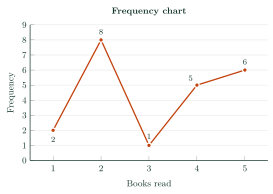
Biểu đồ đoạn thẳng cho biết số quyển sách đã đọc trong tháng trước của 22 học sinh. Có bao nhiêu học sinh có số sách đã đọc lớn hơn 2?
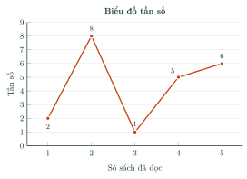
Answer: d. \(1+5+6=12\).
Đáp án d. \(1+5+6=12\).
The bar chart shows the number of books read last month by 26 students. What is the difference between the greatest and the least frequency?
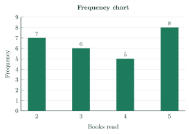
Biểu đồ cột cho biết số quyển sách đã đọc trong tháng trước của 26 học sinh. Hiệu giữa tần số lớn nhất và tần số nhỏ nhất là bao nhiêu?
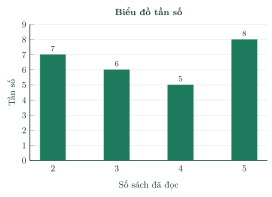
Answer: c. \(8-5=3\).
Đáp án c. \(8-5=3\).
The bar chart shows the results of a survey about the favorite fruits of students in class 9A. How many students took part in the survey?
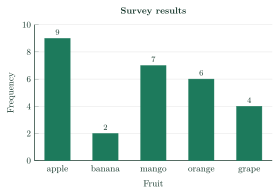
Biểu đồ cột cho biết kết quả khảo sát về loại quả yêu thích của học sinh lớp 9A. Có bao nhiêu học sinh tham gia khảo sát?
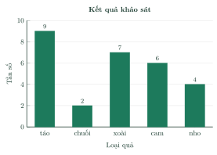
Answer: c. \(n=9+2+7+6+4=28\).
Đáp án c. \(n=9+2+7+6+4=28\).
D4. Self-practice – Advanced applicationD4. Tự luyện – Mức Vận dụng
The bar chart shows the air quality index (AQI) of a city over 30 days of April. How many more days had good air quality than poor or bad air quality?
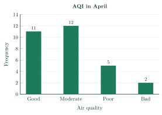
Biểu đồ cột cho biết chất lượng không khí (theo chỉ số AQI) của một thành phố trong 30 ngày của tháng Tư. Số ngày không khí tốt nhiều hơn số ngày không khí kém hoặc xấu là bao nhiêu?
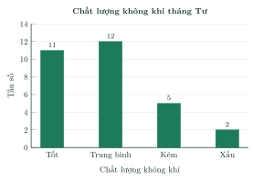
Answer: a. \(11-(5+2)=4\).
Đáp án a. \(11-(5+2)=4\).
| Hours of sleep (x) | 7 | 8 | 9 | 10 |
|---|---|---|---|---|
| Frequency (m) | 5 | 8 | ? | ? |
| Số giờ ngủ (x) | 7 | 8 | 9 | 10 |
|---|---|---|---|---|
| Tần số (m) | 5 | 8 | ? | ? |
Answer: a. \(3m+m=25-13=12\Rightarrow m=3\).
Đáp án a. \(3m+m=25-13=12\Rightarrow m=3\).
| Score (x) | 5 | 6 | 7 | 8 | 9 | 10 |
|---|---|---|---|---|---|---|
| 9C: Frequency (m) | 6 | 1 | 4 | 5 | 1 | 8 |
| 9D: Frequency (m) | 2 | 8 | 2 | 8 | 7 | 6 |
| Điểm (x) | 5 | 6 | 7 | 8 | 9 | 10 |
|---|---|---|---|---|---|---|
| 9C: Tần số (m) | 6 | 1 | 4 | 5 | 1 | 8 |
| 9D: Tần số (m) | 2 | 8 | 2 | 8 | 7 | 6 |
Answer: c. 9C: \(4+5+1+8=18\); 9D: \(2+8+7+6=23\).
Đáp án c. 9C: \(4+5+1+8=18\); 9D: \(2+8+7+6=23\).
A. Multiple ChoiceA. Trắc nghiệm nhiều lựa chọn
The data below are the number of books read last month by 20 students: 2, 5, 2, 2, 5, 2, 2, 4, 4, 3, 5, 2, 4, 4, 2, 2, 2, 4, 5, 3. What is the frequency of the value 2?
Dãy dữ liệu sau là số quyển sách đã đọc trong tháng trước của 20 học sinh: 2, 5, 2, 2, 5, 2, 2, 4, 4, 3, 5, 2, 4, 4, 2, 2, 2, 4, 5, 3. Tần số của giá trị 2 là bao nhiêu?
Answer: b. Count the times 2 appears: \(m=9\).
Đáp án b. Đếm số lần giá trị 2 xuất hiện: \(m=9\).
| Number of children (x) | 0 | 1 | 2 | 3 | 4 |
|---|---|---|---|---|---|
| Frequency (m) | 1 | 7 | 6 | 8 | 4 |
| Số con (x) | 0 | 1 | 2 | 3 | 4 |
|---|---|---|---|---|---|
| Tần số (m) | 1 | 7 | 6 | 8 | 4 |
Answer: b. \(n=1+7+6+8+4=26\).
Đáp án b. \(n=1+7+6+8+4=26\).
The bar chart shows the frequencies of the number of books read last month by 29 students. What is the frequency of the value “2”?
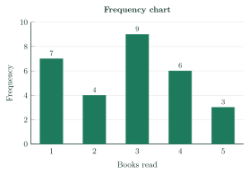
Biểu đồ cột cho biết tần số của số quyển sách đã đọc trong tháng trước của 29 học sinh. Tần số của giá trị “2” là bao nhiêu?
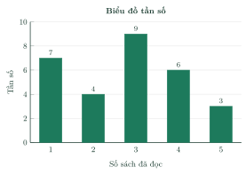
Answer: d. The bar of “2” has height 4.
Đáp án d. Cột ứng với “2” cao 4.
B. True or FalseB. Đúng hoặc sai
The data are the hours of sleep of 14 students last night: 7, 10, 10, 6, 9, 8, 6, 8, 8, 8, 6, 6, 9, 6. In the frequency table of these data, the value 6 has frequency 5.
Dữ liệu là số giờ ngủ đêm qua của 14 học sinh: 7, 10, 10, 6, 9, 8, 6, 8, 8, 8, 6, 6, 9, 6. Trong bảng tần số của mẫu dữ liệu này, giá trị 6 có tần số 5.
True. The value 6 appears 5 times.
Đúng. Giá trị 6 xuất hiện 5 lần.
The line graph shows the frequencies of the hours of sleep of students last night. The value 6 appears more often than the value 7.
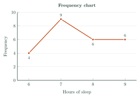
Biểu đồ đoạn thẳng cho biết tần số của số giờ ngủ đêm qua của học sinh. Giá trị 6 xuất hiện nhiều lần hơn giá trị 7.
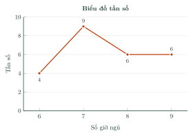
False. Frequencies: 6 has 4, 7 has 9.
Sai. Tần số: 6 là 4, 7 là 9.
C. Short AnswerC. Trả lời ngắn
| Number of children (x) | 0 | 1 | 2 | 3 |
|---|---|---|---|---|
| Frequency (m) | 2 | 7 | ? | 8 |
| Số con (x) | 0 | 1 | 2 | 3 |
|---|---|---|---|---|
| Tần số (m) | 2 | 7 | ? | 8 |
Enter a number.
Nhập một số.
Answer: 5. \(22-(2+7+8)=5\).
Đáp số: 5. \(22-(2+7+8)=5\).
The bar chart shows the hours of sleep of 37 students last night. For how many students is the number of hours of sleep at least 9?
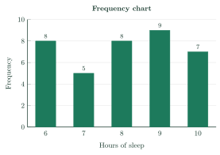
Biểu đồ cột cho biết số giờ ngủ đêm qua của 37 học sinh. Có bao nhiêu học sinh có số giờ ngủ lớn hơn hoặc bằng 9?
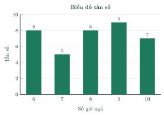
Enter a number.
Nhập một số.
Answer: 16. \(9+7=16\).
Đáp số: 16. \(9+7=16\).
D1. Self-practice – RememberingD1. Tự luyện – Mức Nhận biết
A frequency line graph is made of…
Biểu đồ tần số dạng đoạn thẳng gồm…
Answer: b. Mark \((x_i;\ m_i)\) and join consecutive points.
Đáp án b. Đánh dấu các điểm \((x_i;\ m_i)\) rồi nối các điểm liên tiếp.
In a frequency bar chart, the height of each bar shows…
Trong biểu đồ tần số dạng cột, chiều cao mỗi cột biểu diễn…
Answer: c. Height = frequency.
Đáp án c. Chiều cao cột bằng tần số.
| Number of children (x) | 0 | 1 | 2 | 3 | 4 |
|---|---|---|---|---|---|
| Frequency (m) | 7 | 6 | 3 | 4 | 9 |
| Số con (x) | 0 | 1 | 2 | 3 | 4 |
|---|---|---|---|---|---|
| Tần số (m) | 7 | 6 | 3 | 4 | 9 |
Answer: a. Read the column with \(m=4\): the value is 3.
Đáp án a. Đọc cột có \(m=4\): giá trị là 3.
D2. Self-practice – UnderstandingD2. Tự luyện – Mức Thông hiểu
The data are the number of children in 18 families: 0, 1, 3, 1, 3, 1, 2, 3, 1, 3, 1, 2, 3, 2, 2, 1, 1, 2. The frequencies of the values 0, 1, 2, 3 are respectively…
Dữ liệu là số con của 18 gia đình: 0, 1, 3, 1, 3, 1, 2, 3, 1, 3, 1, 2, 3, 2, 2, 1, 1, 2. Tần số của các giá trị 0, 1, 2, 3 lần lượt là…
Answer: d. Count each value: \(1;\ 7;\ 5;\ 5\).
Đáp án d. Đếm từng giá trị: \(1;\ 7;\ 5;\ 5\).
The data are the shoe sizes of 19 students: 40, 37, 40, 36, 40, 41, 41, 40, 41, 36, 39, 36, 36, 40, 38, 36, 38, 36, 39. For how many students is the shoe size less than 41?
Dữ liệu là cỡ giày của 19 học sinh: 40, 37, 40, 36, 40, 41, 41, 40, 41, 36, 39, 36, 36, 40, 38, 36, 38, 36, 39. Có bao nhiêu học sinh có cỡ giày nhỏ hơn 41?
Answer: b. \(6+1+2+2+5=16\).
Đáp án b. \(6+1+2+2+5=16\).
The answers of a survey about the favorite sports of 16 students are: swimming, basketball, badminton, badminton, badminton, badminton, badminton, badminton, basketball, chess, basketball, badminton, badminton, swimming, badminton, swimming. What is the frequency of “chess”?
Kết quả khảo sát về môn thể thao yêu thích của 16 học sinh là: cầu lông, cầu lông, bóng rổ, bóng rổ, bơi lội, cầu lông, cầu lông, bóng rổ, bơi lội, cầu lông, cầu lông, cờ vua, bơi lội, cầu lông, cầu lông, cầu lông. Tần số của “cờ vua” là bao nhiêu?
Answer: c. “chess” appears once.
Đáp án c. “cờ vua” xuất hiện 1 lần.
D3. Self-practice – Basic applicationD3. Tự luyện – Mức Vận dụng thấp
The line graph shows the number of children in 25 families. For how many families is the number of children greater than 2?
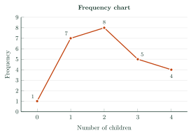
Biểu đồ đoạn thẳng cho biết số con của 25 gia đình. Có bao nhiêu gia đình có số con lớn hơn 2?
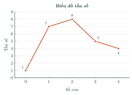
Answer: d. \(5+4=9\).
Đáp án d. \(5+4=9\).
The bar chart shows the number of books read last month by 23 students. What is the difference between the greatest and the least frequency?
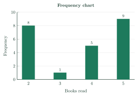
Biểu đồ cột cho biết số quyển sách đã đọc trong tháng trước của 23 học sinh. Hiệu giữa tần số lớn nhất và tần số nhỏ nhất là bao nhiêu?
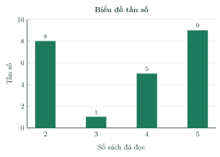
Answer: c. \(9-1=8\).
Đáp án c. \(9-1=8\).
The bar chart shows the results of a survey about the favorite sports of students in class 9B. How many students took part in the survey?
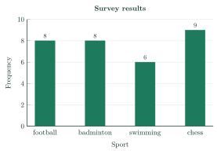
Biểu đồ cột cho biết kết quả khảo sát về môn thể thao yêu thích của học sinh lớp 9B. Có bao nhiêu học sinh tham gia khảo sát?
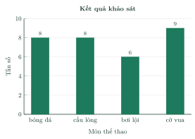
Answer: c. \(n=8+8+6+9=31\).
Đáp án c. \(n=8+8+6+9=31\).
D4. Self-practice – Advanced applicationD4. Tự luyện – Mức Vận dụng
The bar chart shows the air quality index (AQI) of a city over 30 days of June. How many more days had good air quality than poor or bad air quality?
Biểu đồ cột cho biết chất lượng không khí (theo chỉ số AQI) của một thành phố trong 30 ngày của tháng Sáu. Số ngày không khí tốt nhiều hơn số ngày không khí kém hoặc xấu là bao nhiêu?
Answer: d. \(14-(2+1)=11\).
Đáp án d. \(14-(2+1)=11\).
| Hours of sleep (x) | 6 | 7 | 8 | 9 | 10 |
|---|---|---|---|---|---|
| Frequency (m) | 6 | 8 | 3 | ? | ? |
| Số giờ ngủ (x) | 6 | 7 | 8 | 9 | 10 |
|---|---|---|---|---|---|
| Tần số (m) | 6 | 8 | 3 | ? | ? |
Answer: b. \(2m+m=26-17=9\Rightarrow m=3\).
Đáp án b. \(2m+m=26-17=9\Rightarrow m=3\).
| Score (x) | 5 | 6 | 7 | 8 | 9 | 10 |
|---|---|---|---|---|---|---|
| 9B: Frequency (m) | 8 | 2 | 5 | 4 | 5 | 4 |
| 9D: Frequency (m) | 3 | 5 | 3 | 8 | 7 | 8 |
| Điểm (x) | 5 | 6 | 7 | 8 | 9 | 10 |
|---|---|---|---|---|---|---|
| 9B: Tần số (m) | 8 | 2 | 5 | 4 | 5 | 4 |
| 9D: Tần số (m) | 3 | 5 | 3 | 8 | 7 | 8 |
Answer: a. 9B: \(5+4=9\); 9D: \(7+8=15\).
Đáp án a. 9B: \(5+4=9\); 9D: \(7+8=15\).
8Common MistakesLỗi thường gặp
Missing a value when counting. Check that the frequencies add up to the sample size.
Đếm sót giá trị. Kiểm tra tổng các tần số bằng cỡ mẫu.
Mixing up value and frequency. The value is on the horizontal axis; the frequency is the height.
Nhầm giá trị với tần số. Giá trị ở trục ngang; tần số là chiều cao.
Uneven scale. Use equal steps on the vertical axis.
Chia trục không đều. Trục đứng phải chia đều.
No title or axis names. A chart must say what it shows.
Thiếu tên biểu đồ, tên trục. Biểu đồ phải cho biết nó biểu diễn gì.
9Lesson SummaryTổng kết
The frequency \(m_i\) of \(x_i\) is the number of times \(x_i\) appears; \(n=m_1+\dots+m_k\) is the sample size.
Tần số \(m_i\) của \(x_i\) là số lần \(x_i\) xuất hiện; \(n=m_1+\dots+m_k\) là cỡ mẫu.
A frequency table has a row of values and a row of frequencies.
Bảng tần số gồm dòng các giá trị và dòng các tần số.
Frequency charts: bar chart (bar height = frequency) and line graph (points \((x_i;\ m_i)\) joined by segments).
Biểu đồ tần số: dạng cột (chiều cao cột = tần số) và dạng đoạn thẳng (các điểm \((x_i;\ m_i)\) nối bằng đoạn thẳng).
Key English: data set, frequency, sample size, frequency table, frequency chart, bar chart, line graph, horizontal axis, vertical axis.
Thuật ngữ cần nhớ (chạm vào để xem tiếng Anh): mẫu dữ liệu, tần số, cỡ mẫu, bảng tần số, biểu đồ tần số, biểu đồ cột, biểu đồ đoạn thẳng, trục ngang, trục đứng.